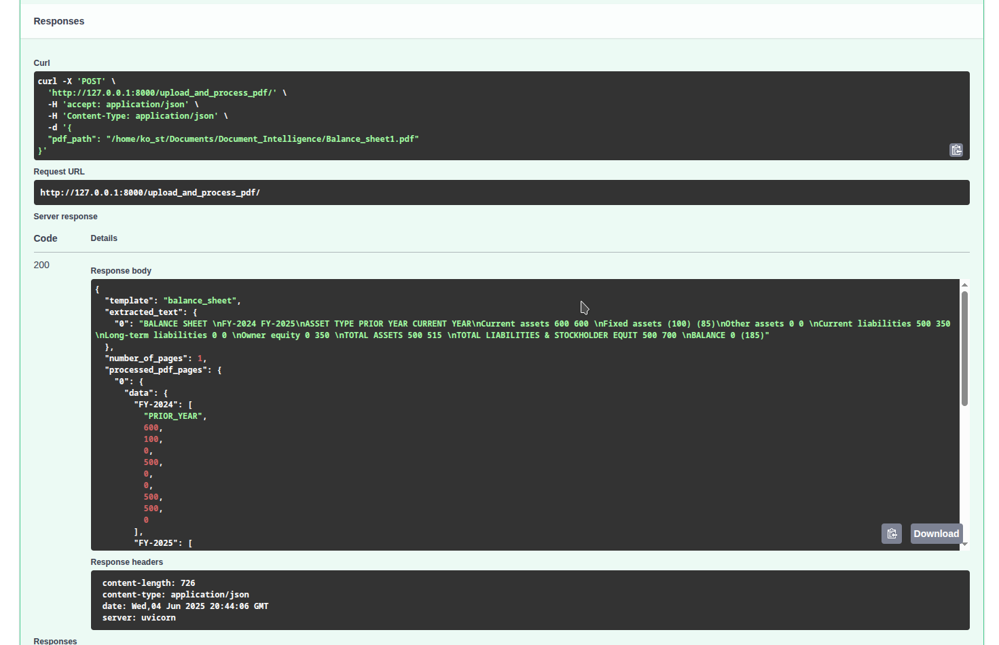

Developing a Document Intelligence Application with FastAPI
FastAPI is awesome. It is a web framework designed to be blazingly fast with clear design choices (see dependency injections !) It is also based on the idea that you model your classes as Pydantic Models and define the attributes of the classes, type hint them and you are done! After you have built the backend logic for your application, you just need to select the appropriate type hints/Pydantic models for your endpoint method parameters and FastAPI will validate the inputs/outputs. Using Object Relational Mapping (https://fastapi.tiangolo.com/tutorial/sql-databases/) you can also map Pydantic models to Data Models, relate class attributes to corresponding Database Table columns.
[models.py]
We first need to first construct our logic, a Class that reads the pdf file, attempts to extract the tables and format them like we want
from typing import List, Union, Dict
from pydantic import BaseModel
import regex as re
import pandas as pd
from PyPDF2.errors import PdfReadError
from PyPDF2 import PdfReader
from fastapi import HTTPException
from inputs import postprocessing_dict
import joblib
class Templateclassifier:
def __init__(self):
# replace with env.mapping to categories
self.category: dict[int, str] = {}
# sync function since it uses the sync function classify
# we use a classify function to select our main processing pipeline based on template
def doc_classify(self, text: str) -> int:
# call classify with potentially cached result
is_balance_sheet, is_invoice = classify(text)
if is_balance_sheet:
return 0
elif is_invoice:
return 1
else:
raise HTTPException(
status_code=404,
detail="Need to call classifier.Category not handled yet",
)
class TemplateParser:
def __init__(self, template: str):
self.template: str = template
self.extracted_text: dict[int, str] = {}
self.number_of_pages: int
self.processed_pdf_pages: Dict[int, Processedpage]
# takes the text extracted from PyPdf2
# and postprocesses
async def parsePdf(self, pdf_input: PDFmodelinput) -> dict[int, str]:
print("parsing pdf")
print(pdf_input.pdf_path)
extracted_text: dict[int, str] = {}
reader = PdfReader(pdf_input.pdf_path)
self.number_of_pages = len(reader.pages)
print(f"This pdf has {self.number_of_pages} pages.")
extracted_text = {i: x.extract_text() for i, x in enumerate(reader.pages)}
# initialize classifier and use it
doc_classifier = Templateclassifier()
all_pdf_text = "".join(
[f"\npage{i}\n" + x.extract_text() for i, x in enumerate(reader.pages)]
)
category = doc_classifier.doc_classify(all_pdf_text)
print("category is", category)
return extracted_text
async def collect_postprocessed_pages(self) -> Dict[int, Processedpage]:
print("collecting all pages and applying the pipeline to each one")
processed_pdf_pages: dict[int, Processedpage] = {}
for x in self.extracted_text:
try:
pages = await self.postprocessPdf(self.extracted_text[x])
# set list of the data + index
processed_pdf_pages[x] = pages
except Exception as e:
print(
f"Exception {e}.Something wrong with processing page {x}. Returning empty Dataframe"
)
# otherwise set empty dict
processed_pdf_pages[x] = Processedpage(data={}, index=[])
return processed_pdf_pages
async def postprocessPdf(self, page: str, has_title: bool = True) -> Processedpage:
print("applying pipeline to current page")
# cases of templates
# 1. balance_sheet
# 2. stocks...
# A. we will implement simple parsing using regex
# B. add an LLM Implementation to try to instruct it to extract structured data
# split per new line as we see it is the most easy way to split this doc
data_per_line = [re.sub(r"\s+$", "", x) for x in page.split("\n")]
data_per_line = data_per_line[1:] if has_title == True else data_per_line
# if template=='balance_sheet':
# replace split words with template words - columns
pattern = re.compile("|".join(re.escape(k) for k in postprocessing_dict.keys()))
# replace () with "" ,remove them
pattern2 = re.compile(r"[()]") # Match any "(" or ")"
def replace_template(match):
return postprocessing_dict[match.group(0)]
# remove ')' and '(' and also replace the words from the dict with the values
data_per_line = [pattern.sub(replace_template, x) for x in data_per_line]
data_per_line = [pattern2.sub("", x) for x in data_per_line]
# cast a column-index value to integer if applicable
def cast_to_number(x: str) -> int:
try:
return int(x)
except ValueError:
return x
index = [
x.split(" ")[0] for x in data_per_line[1:]
]
values = [
list(map(cast_to_number, x.split(" ")[1:])) for x in data_per_line[1:]
] # rest of the elements
outer_columns = data_per_line[0].split(" ") # get outer columns
# Step 2: Create the DataFrame
df = pd.DataFrame(values, index=index)
# rename outer columns with correct names
df.columns = outer_columns
# return the list of items-data and the index to reconstruct the dataframe
# series are not serializable in FastAPI so to_dict(series) is not supported
return Processedpage(data=df.to_dict(orient="list"), index=list(df.index))
# call the main pdf processing pipeline
async def call_pdf_pipeline(self, pdf_input: PDFmodelinput) -> PDFmodeloutput:
print("CALLING PIPELINE ON PDF")
try:
# parse pdf with pypdf to extract text
self.extracted_text = await self.parsePdf(pdf_input)
except FileNotFoundError:
raise HTTPException(
status_code=404,
detail="File not found. Please provide a valid file path.",
)
except PdfReadError:
raise HTTPException(status_code=400, detail="Error reading file")
# call postprocess to do the postprocessing steps
self.processed_pdf_pages = await self.collect_postprocessed_pages()
print(type(self.processed_pdf_pages))
return PDFmodeloutput(
template=self.template,
extracted_text=self.extracted_text,
number_of_pages=self.number_of_pages,
processed_pdf_pages=self.processed_pdf_pages,
)
As you can see we create a class TemplateParser to extract pdf text for each page using regex, we detect the columns and then create the final pdf. All our class methods are defined as async since FastAPI is working great with asyncio and we don't really want blocking processes when dealing with web applications. The exceptions are functions that by default only work in synchronous context and those and one such example is the doc_classify, which we will explain below.
Another important point is that all inputs and outputs of functions are type hinted so that FastAPI can automatically validate them. You may have also noticed that we have used 2 custom Pydantic models PDFmodelinput and PDFmodeloutput as type hints. We will show the models later and it will make more sense.
An interesting observation is that FastAPI can not serialize Pandas DataFrames and Series so you can see instead of constructing DataFrames during pdf parsing we save the reconstructed DataFrame into dictionaries, along with it's index so we can recreate the DataFrame when we receive the response from our Application.
Also as you can see, most of the blocks that attempt
to read and extract certain patterns in the pdf
must be called inside
Why doc_classify is sync
The class TemplateParser is representing here a generic Classifier which for example could take any text, extracted from the pdf and use a Neural Network or a simpler classifier method to match to some predefined templates that our application can handle. This is also the reason for defining a template variable in our main class, to hold the template of the given pdf.
# define caching result to disk with joblib
# cache classification result
memory = joblib.Memory(location="cache.joblib")
# those could be inside .env
# patterns to search inside the extracted text
balance_sheet_keys = r"balance.{1,2}sheet"
invoice_keys = r"invoice"
# this function is defined as sync function
# since joblib works with sync context
@memory.cache()
def classify(text: str) -> tuple[bool, bool]:
is_balance_sheet = bool(re.search(balance_sheet_keys, text, re.IGNORECASE))
is_invoice = bool(re.search(invoice_keys, text, re.IGNORECASE))
return is_balance_sheet, is_invoice
Our classify function is using joblib cache to store results and joblib can work only synchronously. This means that the function classify should be syncronous so no async used, and also the method doc_classify that calls the classify function should also be synchronous, otherwise we could have blocking operations. Generally if we define path operation functions or Dependencies that use synchronous functions we need to use simple functions (sync) otherwise if we set them as async they may block our other requests. But when they are simple, FastAPI knows they are not async and schedules them as different threads. So here for example this classify functions could be Machine Learning classifier and we could enjoy performance gain if we cache the result of the classification.
This is a simple classifier that attempts to grab certain keywords as you see, where we define the keys for the 2 templates.
Defining the Pydantic models
class PDFmodelinput(BaseModel):
# file: bytes
pdf_path: str
class Processedpage(BaseModel):
data: Dict[str, List[Union[str, int, float]]]
index: List[str]
class PDFmodeloutput(BaseModel):
template: str
extracted_text: dict[int, str]
number_of_pages: int
processed_pdf_pages: Dict[int, Processedpage]
# Dataframe is not supported
# so we return dict inside
# with {data,index}
# and then attempt to reconstruct the dataframeThese are the simple Pydantic models we have defined that denote the attributes of the expected input and output of the application. For the input we denote a simple class that has the path of the pdf. Of course in a remote and production environment we could use more approppriate classes like UploadFile. A simple example of using UploadFile to handle a single file upload using Post method is as follows. It is taken from the official Documentation of FastAPI which is pretty great.There you can find anything else you want. Support Tiangolo and FastAPI! [Doc]
# taken from the official FastAPI documentation,
app = FastAPI()
@app.post("/files/")
async def create_file(file: Annotated[bytes, File()]):
return {"file_size": len(file)}
@app.post("/uploadfile/")
async def create_upload_file(file: UploadFile):
return {"filename": file.filename}
[app.py]
What remains is to actually construct our path operation functions and define our endpoints. FastAPI also gives as some great options to group certain endpoints (routes) but here we won't use them.
import contextlib
from fastapi import FastAPI, Depends, status
import pandas as pd
import uvicorn
import os
from models import TemplateParser, PDFmodeloutput
from models import memory
# instantiate pdf model
# using the environment parameter template
# this can be overriden here of course, or when run as container
pdf_processor = TemplateParser("balance_sheet") # proj_settings.template)
# async context manager to set up app lifetime (startup/end)
@contextlib.asynccontextmanager
async def lifespan(app: FastAPI):
yield
# create the app
app = FastAPI(lifespan=lifespan)
# post method, upload the pdf
@app.post("/upload_and_process_pdf/", response_model=PDFmodeloutput)
async def create_upload_file(
output_pdf: PDFmodeloutput = Depends(pdf_processor.call_pdf_pipeline),
) -> PDFmodeloutput:
print("Output pdf is ")
# lets write the pdf as output so we can get bacj the result
df = await get_back_pdf(output_pdf)
return output_pdf
async def get_back_pdf(output_pdf: PDFmodeloutput) -> pd.DataFrame:
# reconstruct the pdf from the parsed pages
for page_num in output_pdf.processed_pdf_pages:
df = output_pdf.processed_pdf_pages[page_num].data
print(f"page{page_num} :\n", output_pdf.extracted_text[page_num])
ind = pd.Index(output_pdf.processed_pdf_pages[page_num].index)
df = pd.DataFrame(df)
print("df", df)
df.index = ind
# write dataframe to output
df.to_csv(os.path.join(f"./balance_sheet{page_num}.csv"))
return output_pdf
if __name__ == "__main__":
uvicorn.run(app, host="127.0.0.1", port=11000)
Ok that's a lot! Starting here with the call to our TemplateParser. As you see we initiliaze our class during app runtime. And we use a predefined "template" which is "balance_sheet". This can of course be conditioned on your own logic which will call different methods of the class depending on the detected template.
Regarding @contextlib.asynccontextmanager, this is required when we need to define for example a Database connection and create schemas and tables in the Database before the application starts. [Link] Context Managers allow us to define some "pre-app" logic for example set up some resources, before the yield statement and then yield is actually when the application runs. After that we define some "post-app" logic to close open connections etc. We just need to decorate a function with this keyword to generate a new context manager and this is what we are doing with the lifespan function that takes as argument our fastapi application. This way we can also initialize expensive objects and operations before the app starts taking requests. The doc says it a lot better than me.[Link] This makes the app more efficient when for example dealing with machine learning models that need to be initialized early but only when they are going to be used.
The rest are not really spectacular. We just define the endpoint where we are going to upload the Pdf file (or here pass the file path) and of course we use the Post HTTP method for this. Defining the path operation function is pretty straightforward. We just use set endpoint path and then we decorate the function that handles this endpoint with it. Now here comes the elegant design of FastAPI! We can abstract all the logic of the processing away from the path operation function create_upload_file This line PDFmodeloutput = Depends(pdf_processor.call_pdf_pipeline) is instructing FastAPI to call the pdf_processor.call_pdf_pipeline method and apply the entire pdf parsing and processing logic to it's defined input. Remember the input to this is defined earlier by specifying the Pydantic model that this function expects. Additionally it also says that that the expected type of the output is PDFmodeloutput so it will validate all inputs and outputs and result in Exceptions if anything is inconsistent. Aaa I forgot! We also get interactive documentation and we can see the errors/requests/response in the "/endpoint/docs" path. So then we just return the expected output_pdf as the final result back to the client. And this is a Pydantic model again so FastAPI knows how to serialize and return it.
The final function get_back_pdf is just a simple function to reconstruct the extracted pdf and save it as .csv file since if you remember this was actually our goal. Again you can implement a download method or some other logic instead.
Testing our Application
Let's test now our application with the balance_sheet template. If we open the endpoint by adding /docs this opens up the ineractive documentation of our endpoints. Uvicorn is an low lever web server implementation for Python and required for async applications. Since we are working with FastAPI, which is asynchronous, we use the uvicorn server. FastAPI exposes an asynchronous interface compatible with the one uvicorn expects [link] To start the server we input a namespace_of_module:app_variable_name So here we use app:app since our module is named app.py and the fastapi application variable is again named app.By default uvicorn runs on port 8000.
If we visit the endpoint http://127.0.0.1:8000/docs
we get the interactive FastAPI documentation and our endpoint
ready to accept the pdf file path, run our preprocessing steps
and also return the output back to the client and save the pdf.
And our pdf is this :
Now if we feed the path into the fastapi "pdf_path" attribute we can
execute the operation function by clicking on the "Try it out".
Of course you should better define you own frontend connected to the backend
operations but right now we want to see that the backbone of our application
is functioning.
This is actually equivalent to running a post request using curl or
another utility. The actual curl command is also presented in the docs
along with the response body returned and the headers. This is awesome!

And you can see the full response that is getting serialized by defining
the appropriate PDFmodeloutput as the return type.
If we now open our directory and look for the produced csv
in our directory we can open it in and ...
Here it is ! You will notice i used a {template}{pages_index}.csv
name for the final csv but again this can be customized to be generic.
The result a formatted csv file which has the correct table
from the original pdf file and now a Data Scientist can sink his teeth in it!
-
Notes:
- template can be customized, and we can define different methodologies to parse the tables for each template. We can also use LLM Models instead of working with regexes and trying to detect patterns. which is another idea we are going to explore in a future article. Generally if you know which pattern to expect it does not make sense to go to non deterministic solutions that are also resource intensive but you never know what will come.